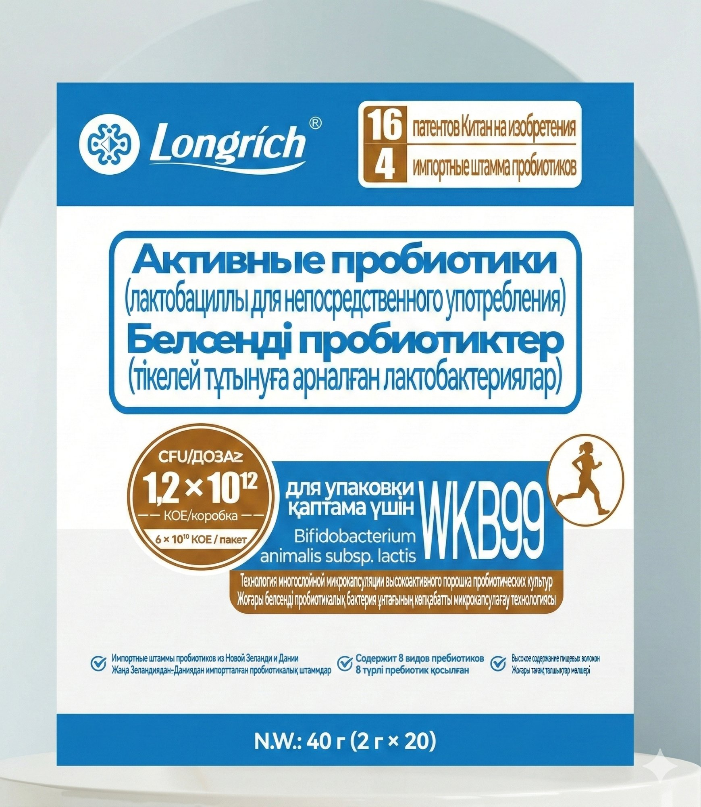
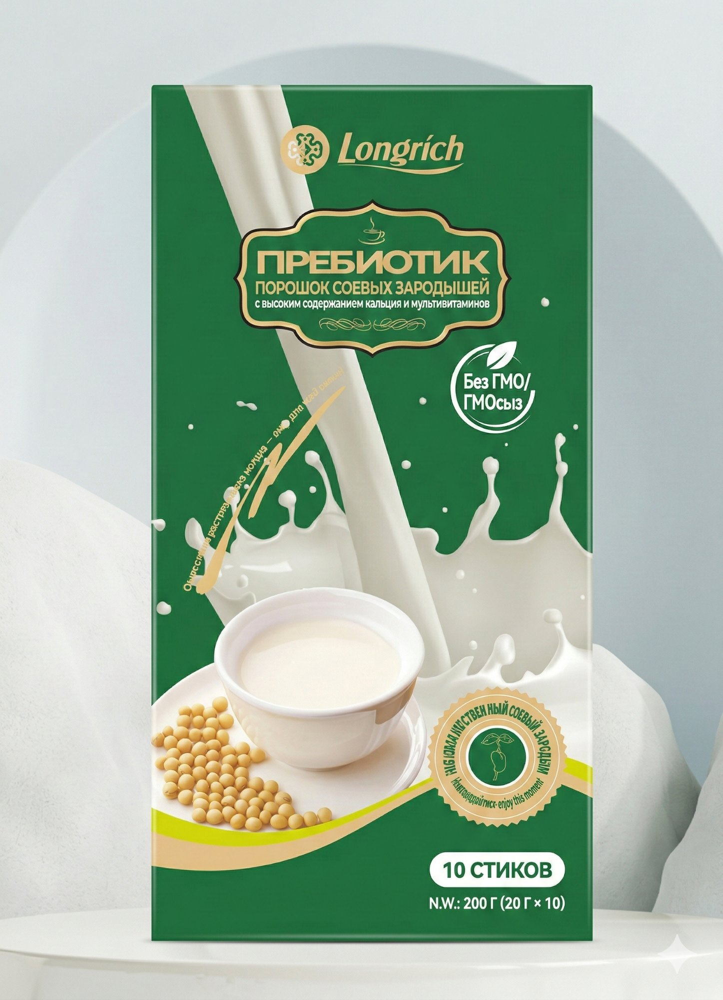

В кишечнике живут два типа бактерий:
✅ Полезные — помогают переваривать еду и держать вес в норме
❌ Вредные — вызывают вздутие, тягу к сладкому и воспаление
Когда вредных больше — начинаются проблемы.
Чтобы вернуть баланс, нужна связка из двух продуктов:
Пробиотик = сами полезные бактерии (60 миллиардов в одном пакетике). Они восстанавливают микрофлору, улучшают пищеварение и дают энергию.
Пребиотик = пища для этих бактерий + белок, кальций и витамины для тебя. Густой тёплый коктейль, который заменяет завтрак.

Порошок в саше, 2 г × 20 пакетиков
В аптечных пробиотиках обычно 1–3 вида, здесь — целых 20. Это как разница между одним врачом и целой больницей
Для сравнения: в аптечном Линексе — всего 12 миллионов. Разница — в тысячи раз
Всё включено: бактерии + их питание в одном пакетике
Поддержка печени и вывод лишней жидкости
Почему это работает, а обычные пробиотики из аптеки — нет?
У обычных пробиотиков нет защиты — кислота желудка убивает 95% бактерий, и до кишечника почти ничего не доходит. Здесь каждая бактерия в пяти защитных оболочках (технология микрокапсулирования). Они раскрываются только в кишечнике — там, где бактерии и должны работать. Бактерии остаются живыми даже без холодильника — можно хранить в сумке, в шкафу, брать в дорогу. У аптечных аналогов большая часть бактерий погибает ещё до того, как ты откроешь упаковку.
Формула 4-в-1: пробиотик + пребиотик + постбиотик (мгновенный иммунный ответ) + экстракты ТКМ. Это не просто бактерии — это готовая система восстановления.
16 патентов на уникальные штаммы. Сертификаты SGS, GMP, Халяль.
Можно растворить в тёплой воде, молоке, йогурте. Или просто высыпать в рот — приятный на вкус.

Соевый коктейль, 20 г × 10 стиков
Густой соевый коктейль из пакетика. Заливаешь горячей водой — получаешь сытный напиток. По ощущениям — как тёплый латте с лёгким ореховым привкусом.
Не обычная соя — запатентованный сорт, из которого убрали всё лишнее и оставили максимум пользы. 15 лет разработки
Тот самый кальций, которого вечно не хватает — но в связке с витамином D, без которого он просто проходит транзитом
B-витамины — чтобы не клевать носом после обеда и не срываться на близких вечером. А, С, Е — чтобы кожа светилась, а не тускнела
Цинк — главный минерал для кожи без высыпаний и волос без выпадения. Пребиотики — питание для бактерий из пробиотика
Может быть лёгкое бурление в животе. Это нормально — бактерии начали работу, кишечник «просыпается». Проходит само.
Стул нормализуется. Утром встаёшь легче. Живот не раздут.
Тяга к сладкому ослабевает. Когда кишечник работает правильно, он перестаёт «требовать» быстрые углеводы. Меньше вздутия, больше энергии днём.
Кожа чище, стабильная энергия без провалов, спокойнее отношение к еде.
Результат у всех разный. Кто-то чувствует разницу на 2-й день. Кому-то нужно 2 недели. Зависит от того, насколько запущен кишечник.
Растворить в тёплой воде (до 37°C) или просто высыпать в рот
Залить горячей водой (80°C+), размешать. Пить как коктейль
Два пакетика в день. Занимает 2 минуты.
Это не жиросжигатель. Здесь нет ничего, что «ускоряет метаболизм» и разгоняет сердце. Механизм другой — через кишечник.
Когда кишечник работает плохо, в нём живут «неправильные» бактерии — те, которые питаются сахаром и мучным. И они буквально требуют свою еду. Ты чувствуешь это как непреодолимую тягу к сладкому, к хлебу, к булочке после обеда.
Это не вопрос силы воли — это физиология. Бактерии в кишечнике буквально посылают сигнал в мозг: «дай сахар». Пока они там — тяга не уйдёт, сколько ни терпи.
Пробиотик меняет состав этих бактерий. Вытесняет «сладкоежек» и заселяет тех, которые питаются клетчаткой. Тяга ослабевает физиологически — не потому что ты терпишь, а потому что организм перестаёт это требовать.
Есть такое понятие — «бактерии ожирения». Определённые бактерии в кишечнике умеют извлекать калории буквально из всего и откладывать их в жир. Ты ешь салат — а тело запасает.
Штаммы бифидобактерий в пробиотике меняют этот профиль. Бактерии начинают «сжигать», а не «запасать».
Часто это не жир, а раздутый газами кишечник + отёки. При стрессе пищеварение отключается, еда гниёт, образуются газы — живот надувается как шарик.
Пробиотик подавляет гнилостные бактерии — газы уходят, живот физически «сдувается». А экстракт гриба Пория в составе выводит лишнюю воду — те самые отёки, которые ты путаешь с жиром.
Это сахарные качели. Съела быстрые углеводы → сахар в крови взлетел → инсулин его резко опустил → упадок сил → хочется ещё сладкого. Замкнутый круг.
Пребиотик ломает этот цикл. У него низкий гликемический индекс — сахар поднимается плавно и так же плавно снижается. Нет скачка — нет провала — нет тяги. Плюс белок и клетчатка дают сытость на 3 часа.
Что получается в итоге
Пробиотик убирает причину — неправильные бактерии, газы, воспаление. Пребиотик перестраивает питание — ровная энергия, нет скачков сахара, долгая сытость. Вместе они не «сжигают жир» — они убирают причины, по которым тело его накапливает. Вес начинает уходить сам, потому что ты перестаёшь переедать и тело перестаёт запасать.
Напиши тому, кто скинул тебе эту ссылку — расскажет, как заказать и с чего начать
Написать